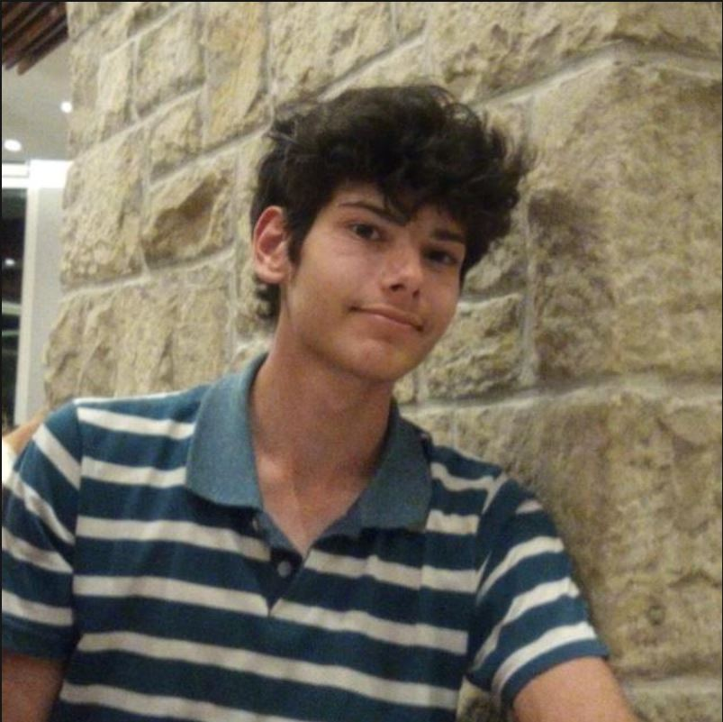

Jael Luna
Me gusta la programación, ver dragón ball y comer don sathur. Dentro del equipo me encargué de la parte de diseño, cuidando que la página se vea prolija y agradable de recorrer.
Rol: Diseño
QUIÉNES SOMOS Y CÓMO LO HICIMOS
Este proyecto reúne música y tecnología para que descubrir lanzamientos de distintos lugares sea simple y visual.
Me gusta la programación, ver dragón ball y comer don sathur. Dentro del equipo me encargué de la parte de diseño, cuidando que la página se vea prolija y agradable de recorrer.
Rol: Diseño

Soy autodidacta con lo q me gusta y me llama la atención la programación. En este proyecto estuve a cargo del desarrollo del HTML, armando la estructura de cada página del sitio.
Rol: Desarrollo del HTML
Me encargué de integrar la API pública de Discogs para buscar lanzamientos según el país y el género elegidos, y mostrar sus portadas, datos y enlaces a cada lanzamiento.
Rol: Integración de la API de Discogs
El Explorador de álbumes permite elegir un país y un género musical para consultar lanzamientos disponibles en Discogs. Los resultados muestran la portada, el título, el país y el año, y ofrecen un enlace al lanzamiento en Discogs.
Elegimos una interfaz oscura para dar protagonismo a las portadas y organizamos cada resultado en una tarjeta para facilitar la exploración. La grilla se adapta al ancho de la pantalla; las fotos del equipo mantienen el mismo tamaño y recorte para que la presentación sea pareja.
Separamos la estructura en HTML, la presentación en CSS y la interacción en JavaScript. La aplicación consulta la API pública de Discogs sin credenciales y utiliza los datos devueltos para construir los resultados y sus enlaces.
Usamos el endpoint Database Search (/database/search) de Discogs para filtrar lanzamientos por país y género. Cuando falta una portada, consultamos el detalle del lanzamiento mediante /releases/{id}. La aplicación usa la API pública sin key ni secret; cada resultado incluye sus créditos y un enlace a Discogs.